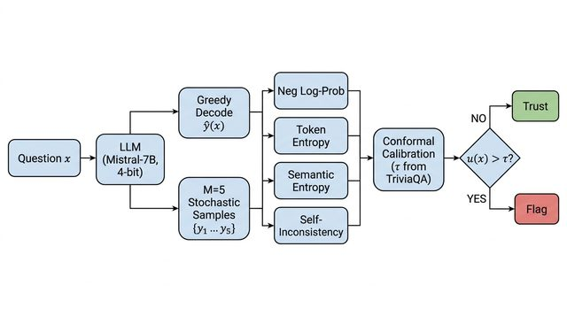

Research systems, papers, and software, from machine learning and autonomous robotics to embedded vision and geospatial analytics.
Comprehensive Evaluation of Machine Learning and Deep Learning Models for Land Use and Land Cover Classification in East Sikkim
East Sikkim, India (~954 km²) Multi-temporal imagery, 2019-2024 Advanced
My flagship AI research project: a publication-style benchmark of 22 machine learning,
deep learning, transformer, stacking, ensemble, and feature-fusion approaches for LULC classification
over the ecologically sensitive Himalayan district of East Sikkim. The imagery comes from three sources:
Sentinel-2 optical, Sentinel-1 SAR, and SRTM topography. Each sample is described by a
24-dimensional feature vector (spectral bands, indices, SAR backscatter,
terrain, and texture) extracted via Google Earth Engine. Random Forest achieved the
best overall accuracy of 93.44% (Kappa 0.9206, Macro-F1 93.24%).
Dataset: 10,530 labeled samples (7,284 train / 3,246 validation) across 6 classes: built-up, vegetation/forest, agriculture, water, barren rock, and snow/glaciers.
Custom architecture: Swin-Tiny-Tabular, a 27M-parameter 1D adaptation of the Swin Transformer with windowed self-attention, patch merging, and stochastic depth, trained with 5-fold stratified CV (OOF accuracy 90.83%).
Top results: Random Forest 93.44% OA, CatBoost 93.01%, Gradient Tree Boost 92.73%. Tree ensembles led all paradigms on this tabular spectral task.

TRUST-LLM: Conformal Hallucination Detection
Mistral-7B (4-bit) · Kaggle T4×2 2026 Advanced
Can an LLM's uncertainty be turned into a provable guarantee instead of a raw confidence score? I applied
split conformal prediction to four uncertainty-scoring methods (log-probability, token entropy, semantic
entropy, self-consistency), calibrating a formal trust region on TriviaQA (α = 0.10) and stress-testing it
on adversarial TruthfulQA and domain-shifted NQ-Open and MedMCQA — 1,100 questions, 6,600 generations,
under three hours on free-tier GPUs with no fine-tuning. Key finding: coverage and detection utility move
in opposite directions under shift, and the MedMCQA failure is a concept shift that importance-weighted
recalibration provably cannot repair.
Communication-Integrated Mobile Environmental Monitoring Framework
Sikkim University & CSIR-CMERI 2025-2026 Advanced
A unified autonomous robotic platform for environmental monitoring: YOLO-seg vision-guided navigation
(mask mAP@50 = 0.988) ONNX-optimized to 15.4 FPS on a Raspberry Pi CPU, fused with a tuned PID controller
and a full sensor-to-cloud communication stack (Flask, Firebase, ThingSpeak, SQLite).
ML-augmented IoT sensing platform running three models (classification, clustering, and anomaly
detection) behind a 6-level alert engine. Data flows from Arduino through a Raspberry Pi into SQLite,
Firebase, and ThingSpeak, with a Flask dashboard on top.
A line-following robot built in four versions: v1 YOLO ONNX vision (25-30 FPS), v2 CSV trajectory
logging, v3 five-channel IR array at 100 Hz via Arduino, and v4 hybrid ML + PID control reaching 99.6%
in-band accuracy. The trained model is published on HuggingFace.
Hybrid controller: a Random Forest residual-error predictor trained on 208,983 time steps augments a classical PID loop, cutting MAE by 92.1% and error energy by 97.9%.
Lyapunov stability of the hybrid ML + PID architecture formally proven.
Training data (221,967 rows over 100 robot runs) published on Kaggle; Optuna-tuned model (432 MB) on HuggingFace.
Model-to-deployment pipeline for real-time path segmentation on Raspberry Pi. I built a custom 289-image
dataset, trained YOLO-seg, and converted it to ONNX at 320×320, reaching 15.4 FPS / 64.8 ms, a 1.57×
speedup with zero memory leaks over a 30-minute stability run.
U-Net CNN for photo-to-pencil-sketch transformation trained with a custom MAE + SSIM loss, reaching an
85% SSIM score. Deployed as a Streamlit web app with sub-2-second inference.
Manual vs Autonomous Navigation: Experimental Comparison
Sikkim University & CSIR-CMERI Mar-Apr 2026 Advanced
40-trial controlled study comparing autonomous YOLO + PID navigation against human teleoperation:
mean RMSE 2.119 cm vs 16.768 cm (87.4% reduction), accuracy 95.37% vs 63.32%, Cohen's d = 8.944.
Hybrid control research: a Random Forest residual predictor trained on 208,983 time steps layered on a
PID loop. Results: 92.1% MAE reduction, 97.9% error energy reduction, and 99.6% in-band accuracy, with
Lyapunov stability formally proven.
scikit-learnPID ControlLyapunov StabilityArduinoRaspberry Pi
Web-teleoperated robot with homography-based trajectory analysis: 4-point interactive calibration and
simultaneous path + robot tracking at 30+ FPS, serving as the ground-truth measurement platform for the
navigation study.
Complete adversarial robustness pipeline: FGSM and PGD attacks implemented from scratch, followed by
PGD adversarial training as a defense, with publication-ready robustness visualizations.
Binary audio classification for real-time distress-sound detection, engineered for edge deployment on
Raspberry Pi. Trained SVM and MLP classifiers on 26 MFCC-based features extracted from 3,128 audio
clips — the SVM reaches 94.89% accuracy (F1 0.95, ROC-AUC 0.986) on the held-out test set.
Random Forest land cover mapping over East Sikkim with multi-year Sentinel-2 composites: 92% accuracy
across five classes over 500+ km², with an automated GEE + QGIS workflow.
Google Earth EngineSentinel-2NDVI / NDWI / NDBIQGIS
Automated water body detection using NDWI on Sentinel-2 imagery over Chilika Lake, Odisha. The GEE +
QGIS workflow delineated 3,264 individual water bodies totalling ~55,823 hectares from the 2023
composite, with full raster-to-vector statistics on the size distribution.
Flask-based sensor monitoring utility for Raspberry Pi with live readings and one-click CSV export.
This is the data-capture backbone reused across my robotics experiments.

{kind=link}
{kind=link}
{kind=link}
{kind=link}
{kind=link}
{kind=link}
{kind=link}
{kind=link}
{kind=link}
{kind=link}
{kind=link}
{kind=link}
{kind=link}
{kind=link}
{kind=link}
{kind=link}
{kind=link}
{kind=link}
{kind=link}
{kind=link}
{kind=link}
{kind=link}
{kind=link}
{kind=link}
{kind=link}
{kind=link}
{kind=link}
{kind=link}
{kind=link}
{kind=link}
{kind=link}
{kind=link}
{kind=link}
{kind=link}
{kind=link}
{kind=link}
{kind=link}
{kind=link}
{kind=link}
{kind=link}
{kind=link}
{kind=link}
{kind=link}
{kind=link}
{kind=link}
{kind=link}